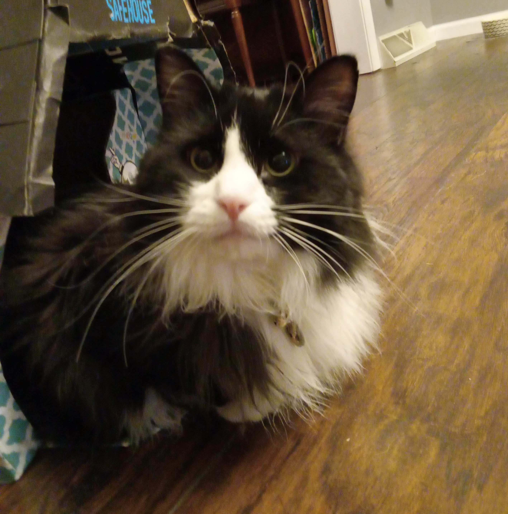
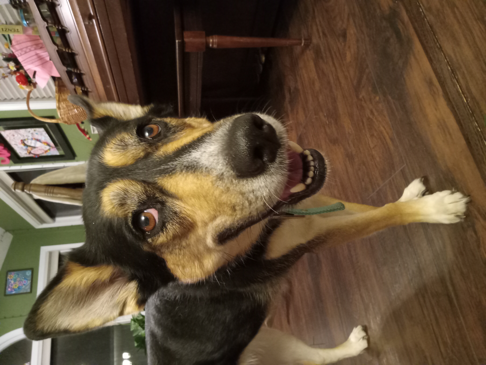

Brett Oleston
About Me
My name is Brett Ryan Oleston and I am a Senior at Joseph A. Craig High School.
I was born on January 27th, 2005 and am 18 years old. I have long brown hair,
have blue eyes, and am 6 feet tall. I was born in Texas, but have lived in Janesville,
Wisconsin for 11 years. I have one sibling: a younger sister named Caroline.
I have two pets, a German Shepherd named Carly and a cat named Corville (both pictued below).
My Class Schedule
- AP Statistics
- AP Computer Science Principles
- AP English Language Composition
- AP Psychology
- AP Calculus BC
- Web Design
- Political Thinking (Beloit College)
My Favorite Movies
- LotR: The Fellowship of the Ring
- LotR: The Two Towers
- LotR: The Return of the King
- Pulp Fiction
- Saving Private Ryan
- Das Boot
- Jurassic Park
- Knives Out
- Forrest Gump
- Die Hard


“Do not take life too seriously. You will never get out of it alive.”
–Elbert Hubbard
Contact Me
oleston.b@stu.janesville.k12.wi.us